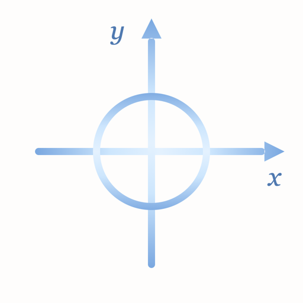
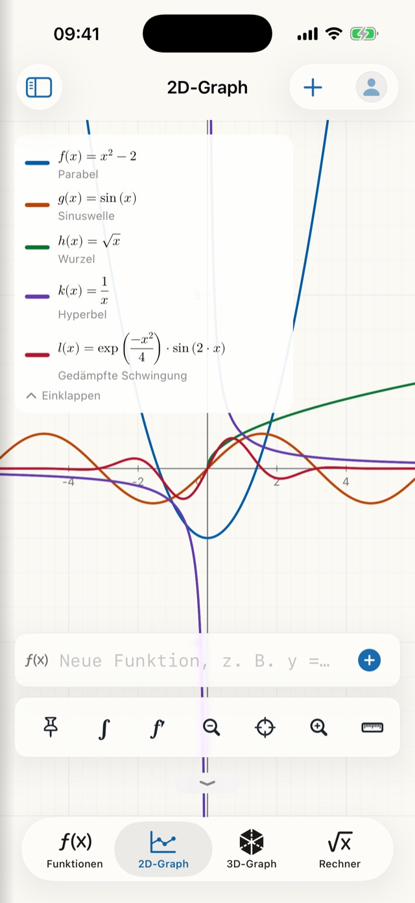
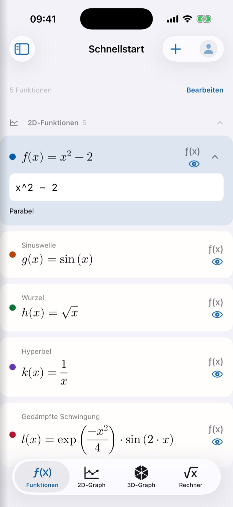
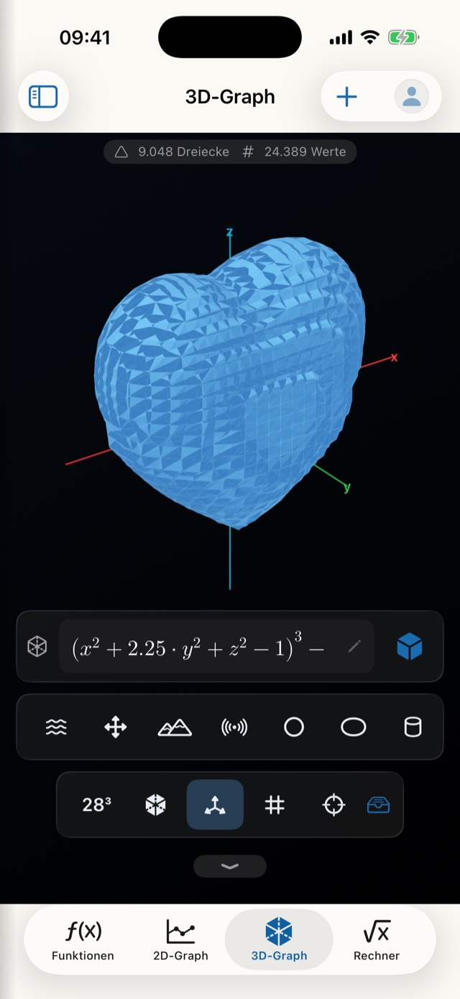
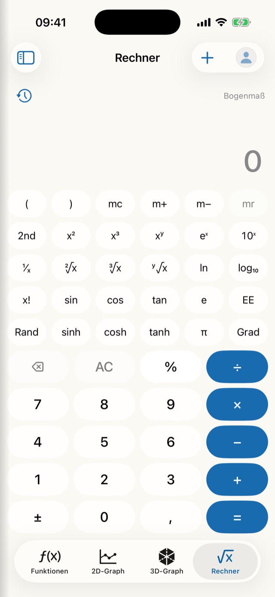

DiamMath
Plot it, work it out, understand it.
DiamMath is a maths app for school, university and anyone who likes to work things out for themselves. It plots functions, examines curves, solves equation systems and renders surfaces in space – and explains each step along the way instead of just handing you an answer. Everything is computed locally on the device, with no account and no internet connection.
Ready to compute from the first second
No file browser, no blank page: DiamMath opens straight into a usable workspace holding five example functions – a parabola, a sine wave, a square root, a hyperbola and a damped oscillation. All five can be edited, and every change is saved continuously in the background.
- Start right away instead of creating a document first
- The quick-start sheet stays put and travels with you via iCloud
- Blocks sit in the categories 2D functions, 3D functions and notes
A graph that stays true to scale
Grid, axes and labels always move with the viewport. You pan and zoom with your fingers, and the axes are equally scaled out of the box – so a circle stays a circle instead of turning into an ellipse.
- The legend presents every curve as “f(x) = term” in proper mathematical typesetting
- Eight clearly distinguishable curve colours, assigned automatically
- A tap places the crosshair – the legend then shows each curve’s value at that position
- If a or b appear in a function, the app creates the sliders itself – with minimum, maximum, step size and a play button
- Implicit curves too: circles, ellipses and hyperbolas, with x² + y² = 25 drawn precisely

Examining curves – integrals included
Drop two points on a curve with the point tool and tap ∫: DiamMath shades the region and shows it as a properly typeset equation with the limits filled in. Put the points on two different curves and it computes the area enclosed between them instead.
- The area is always positive – it is computed as A = ∫|f| dx using an adaptive Simpson method that keeps checking its own accuracy
- Roots, local extrema, intersections, genuine points of tangency and inflection points via the symbolic second derivative
- First, second and third derivatives as blocks of their own in their own colour, marked ′ ″ ‴ in the legend
- If the numerical cross-check fails, the app says so openly – instead of inventing a number
Systems with a verified solution path
A dedicated area for equations and equation systems in one to three unknowns. Linear and quadratic equations are solved exactly – complex solutions included – and fractions appear as real fractions in proper typesetting.
- The solution path unfolds: every step carries its rule and a verification status
- Linear systems with an exact solution rather than an approximation
- Results can be carried over into the worksheet as a note

In three dimensions
The 3D area renders height surfaces z = f(x,y) as well as implicit surfaces F(x,y,z) = 0 – from saddles and tori to a gyroid and a heart. Fifteen ready-made shapes sit in a toolbar and compute with a single tap.
- The scene turns with your finger, zooms and re-centres
- A wireframe mode strips any shape back to its bare line structure
- Four quality levels, from fast to very fine

Type it the way you write it
On iPhone and iPad a purpose-built maths keyboard replaces the system one in every formula field: x, y, z, the parameters a and b, π, e, i, brackets, roots, powers and a division key that becomes a real fraction bar once typeset. A second page holds the functions, from sin to conj.
- Whatever you type appears live in beautiful mathematical typesetting
- Integrals with limits, matrices in proper brackets, sigma and product signs with their index
- A scientific calculator with memory keys, logarithms, factorials, degrees and radians, a history and “ans”
- On the Mac, the hardware keyboard remains the way you type

Worksheets instead of throwaway sums
DiamMath has a file format of its own. What you work out stays with you – and can be passed on.
Its own library
Rename, duplicate, soft-delete – the bin restores worksheets, blocks and parameters together. Saving happens automatically.
Open from anywhere
A tap on a .diammath file in the Files app, in Mail or in a message is enough. That is how worksheets travel from a teacher to a class.
Export
The value table as CSV, the graph as PNG or as a genuine vector PDF – all produced locally, with no detour via a server.
Note blocks
Text with a title of its own, as a fully fledged third kind of block – which turns a worksheet into an explained solution.
Degrees or radians
The angle mode belongs to the worksheet, not to the app – every document keeps its own setting.
Backup
Export and import as a file or via iCloud Drive. A backup never deletes existing files: workbooks are added under free names.
Far beyond plotting
Two workshops gather tools that would otherwise need apps of their own – and each of them writes its result back into the worksheet if you want it to.
Visualisation
Polar curves, parametric curves, implicit curves and plane geometry with unambiguously classified intersections. Gaps in the domain are never quietly bridged.
Linear algebra
Vectors and matrices up to 10 × 10 with determinant, inverse, transpose and linear systems – plus the complex plane.
Sequences, statistics, units
Sequences and series, descriptive statistics with linear regression, and a unit converter covering 13 kinds of quantity.
Just the way you like it
DiamMath shares the design layer of all DiamApps – and carries it right into the maths keyboard.
Your own background images
Functions, the 2D graph, the calculator, calculus and the equation system can each carry an image from your photo library, with freely adjustable opacity. The 3D graph deliberately keeps its dark stage, because that darkness is what gives the surfaces their depth.
Seven accent colours
From the default deep blue through gold, forest green, bordeaux, teal and aubergine to graphite – the colour tints buttons, selections and the operators on the maths keyboard.
24 app icons
Two series of marks in six gemstone colours, each as a day and a night version. Light, dark or following the system – and the language set independently of that.
Navigation your way
Six areas you can sort freely: the first four make up the bar, the rest stay reachable through the sidebar.
Graph defaults
Default viewport, axes and grid; for 3D additionally the surface type, the search volume and four quality levels.
A curve colour per block
Eight clearly distinguishable shades, freely chosen – and colour is never the only cue, because the legend names every curve as well.
Usable by everyone
Every typeset formula carries spoken text written specifically for it – f′(x) becomes “f prime of x equals …”, a sigma sign becomes “sum from n equals 1 to 10”. Every curve names its colour and its label, and the 3D scene describes itself.
Your data stays yours
All calculations run locally. No account, no tracking, no advertising, and no network connection for worksheets, calculations or exports. Switch on iCloud sync and your worksheets, quick-start sheet, background images, profile and settings stay identical on iPhone, iPad and Mac – through your own personal iCloud, with no third-party servers. If two devices change the same worksheet at once, the most recent version wins and the other one remains in the library as a separate copy marked “(conflict …)”.
Honestly speaking
DiamMath is in development. These are the limits of the current version – and we would rather name them here than have you discover them later:
- Integrals are computed numerically, not symbolically – there is no antiderivative as a formula.
- Double roots that lie very close together can merge into one during curve sketching.
- Plane geometry works without a constraint graph: points are placed, not tied to one another.
- The 3D workshop is explicitly a prototype to experiment with.
- The app is not in the App Store yet. There is currently no public test access.
This is an English translation. In case of doubt, the German version of this page is authoritative.